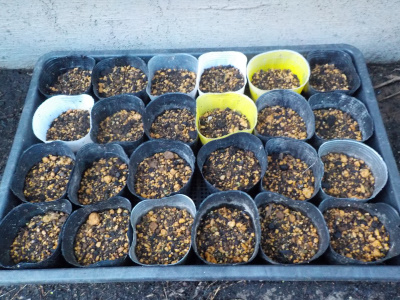
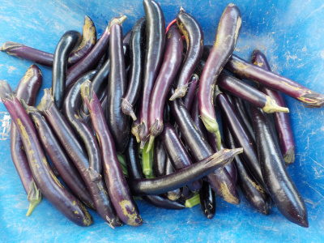
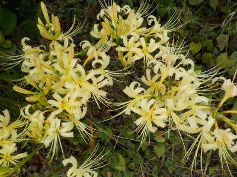
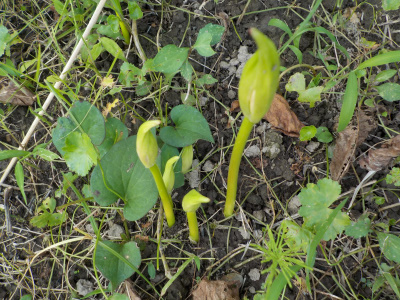
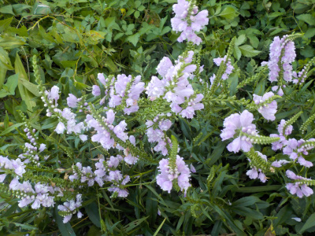

遊びで植物を育てよう
2023/09/18
ブロッコリーと花菜の種をまきました。

ダイソーで2袋110円で買った野菜の種をまきました。
種蒔きはよく失敗しているので、今回も失敗するかもしれないです。
何本か育つといいなくらいに思っています。
【9月TOP】
【日記TOP】
【園芸TOP】
2023/09/18
ナズビが大量に出来ているので、毎日食べる予定です。

ナスビを沢山収獲しました。畑にはまだ沢山大きくなったナスビが残っています。
全部食べるのは無理かもしれないですけど、出来るだけ食べようと思っています。
毎日焼きナスかな。
【9月TOP】
【日記TOP】
【園芸TOP】
2023/09/18
黄色い彼岸花が咲きました。

白い彼岸花が咲きました。なんかいつもより黄色い気がする。
まだツボミがありますので、彼岸まで持ちそうです。
【9月TOP】
【日記TOP】
【園芸TOP】
2023/09/12
彼岸花の芽が出ました。

これから急成長して開花します。
彼岸花なので彼岸に咲くといいかな。
【9月TOP】
【日記TOP】
【園芸TOP】
2023/09/03
草刈りの途中に花を見て休憩。

近ごろあちこちの草を刈っています。
今日は疲れた時に、この花を見て休憩しました。花があるといい気分転換になりますね。
【9月TOP】
【日記TOP】
【園芸TOP】
過去の日記
【2024年9月の日記】
【2023年9月の日記】
【2022年9月の日記】
【2021年9月の日記】
【2020年9月の日記】
【2019年9月の日記】
【2018年9月の日記】
【2017年9月の日記】
【2016年9月の日記】
【2015年9月の日記】
【2014年9月の日記】
【2013年9月の日記】
【2012年9月の日記】
【9月TOP】
【日記TOP】
【園芸TOP】
台風の季節です。
【おいしいものを食べよう。】【たくさん寝よう。】
【ソロ活をしよう!】【季節感のあることをしよう。】【動画視聴はほどほどに。】【当サイトの全てのコンテンツは無断転載禁止です。】